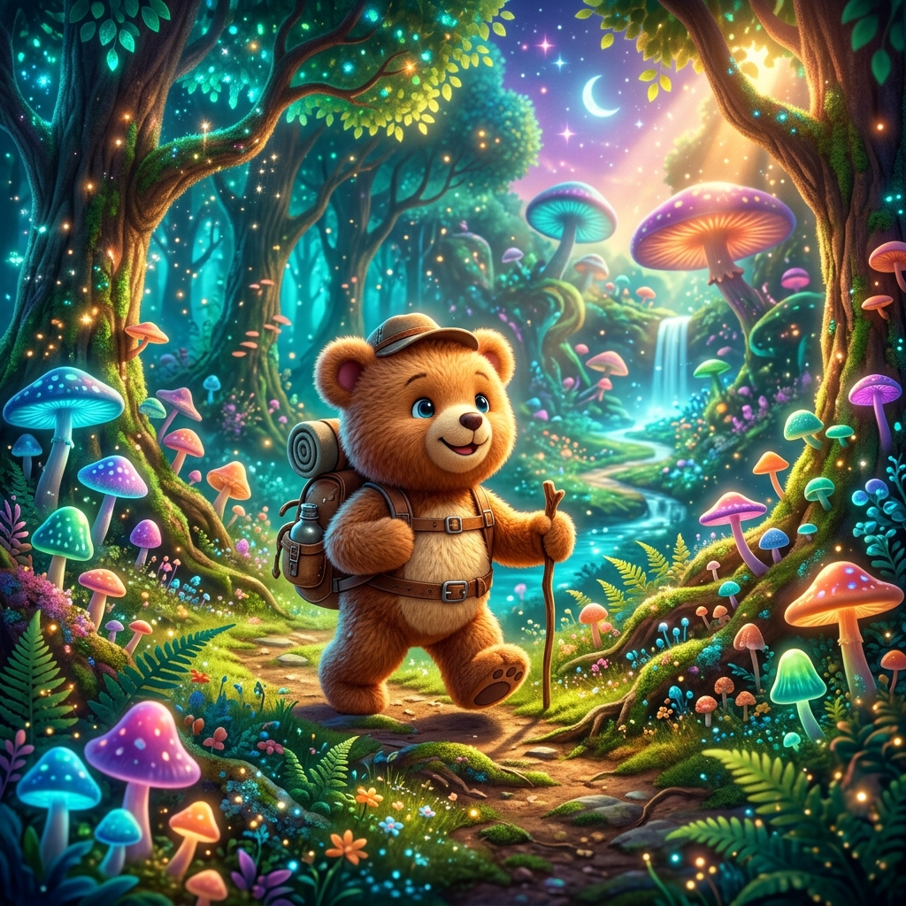

Input Prompt: "A cute fluffy teddy bear explorer with a tiny backpack hiking through a glowing fantasy forest with magical mushrooms, Pixar style animation, 3D."
Magical Bear Adventures
Demonstrates frame-to-frame asset consistency, environmental neon glow styling, and detailed fur texture render pipelines.